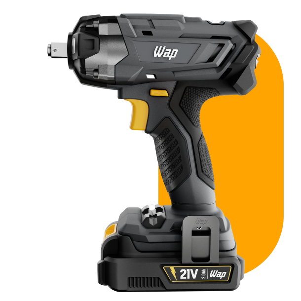
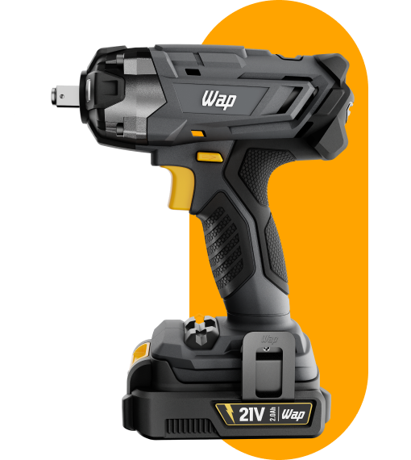
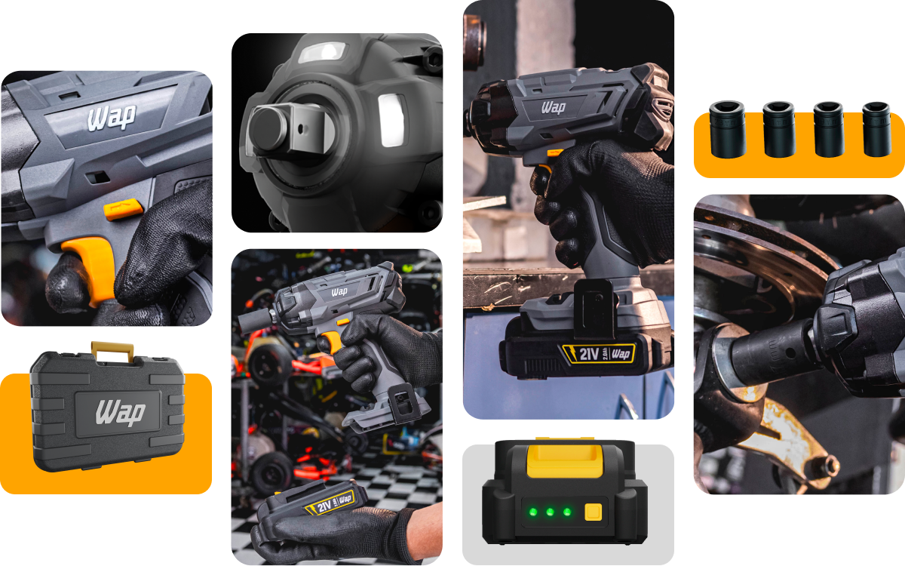
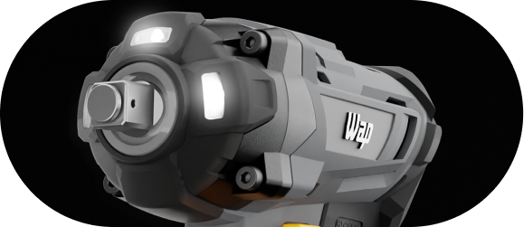
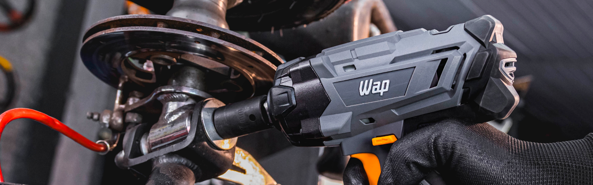
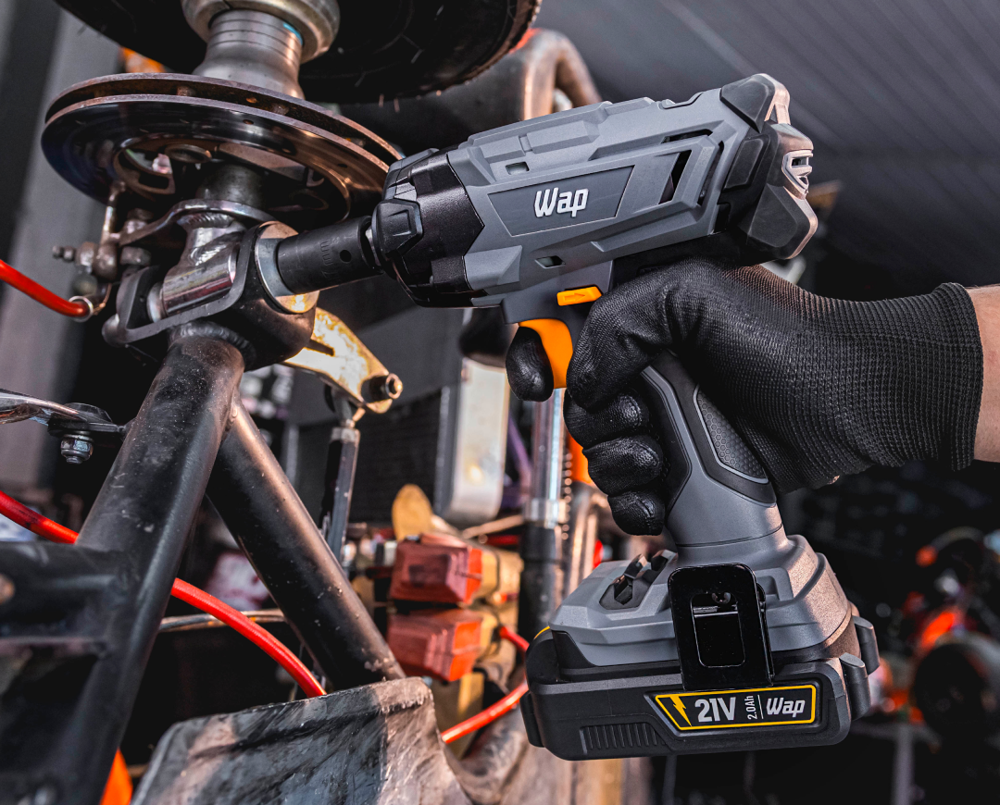
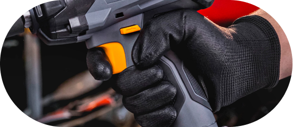
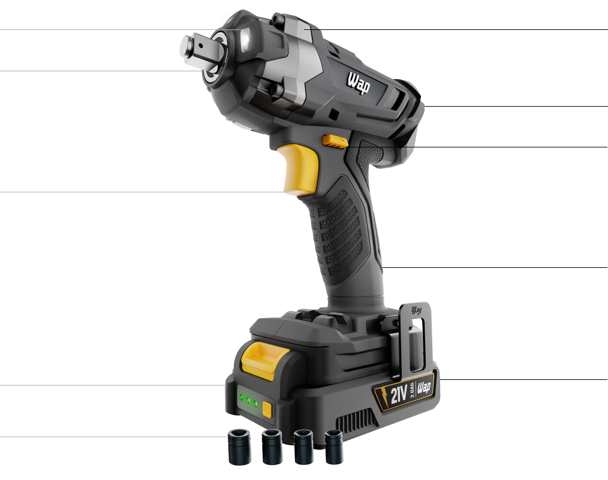
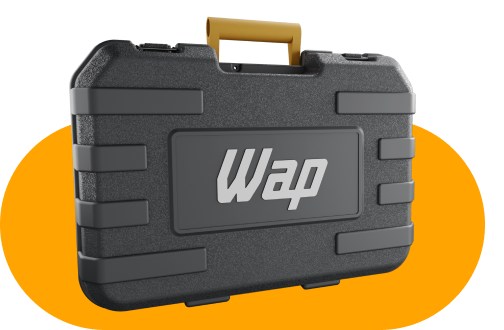
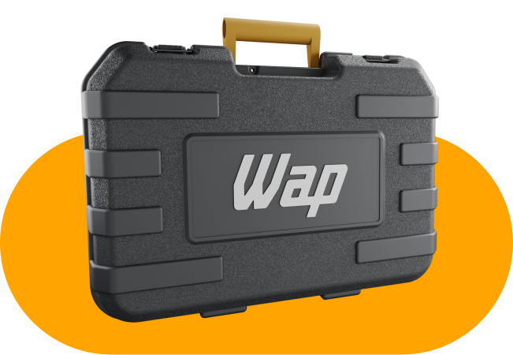

Chave de Impacto
WAP K21 CH01
O máximo poder de torque para suas tarefas
Já pensou em parafusar e desparafusar fixadores em questão de segundos? Com a Chave de Impacto WAP K21 CH01, suas experiências profissionais ou ocasionais tornam-se precisas e eficientes sem esforço.
Leve e compacta
Seu manuseio é confortável e versátil em trabalhos de manutenção rápidos ou reparos prolongados.
Torque máximo
Torque de 350Nm para enfrentar desafios com robustez e potência em todas as tarefas do dia a dia.
Encaixe quadrado
Tenha mais precisão em uma ampla gama de trabalhos, com potência de ½” (13 mm), para apertar ou soltar fixadores.
Eficiência para
superar desafios


Companheira
independente do desafio
Projetada para oferecer rapidez e potência em atividades como carpintaria, decoração, montagem de móveis ou eletrodomésticos, a Chave de Impacto K21 CH01 é a parceira certa para afrouxar ou apertar parafusos e porcas de forma prática.
Ideal para serviços que demandam força, a chave de impacto 21V possui 350Nm de torque máximo. Ergonômica e flexível, o encaixe quadrado de 13 mm é essencial para realizar diferentes tipos de fixação.




Flexibilidade incomparável
Cada vez mais presente na rotina de manutenção e reforma, a Chave de Impacto WAP K21 CH01 conta com funcionalidades que otimizam as tarefas, proporcionando agilidade e segurança em cada etapa do projeto.
Além da empunhadura ergonômica, que oferece conforto e controle durante o uso, a ferramenta possui um cabeçote de alumínio para melhorar a dissipação de calor e três LEDs de trabalho que garantem maior precisão.

As três luzes de LED integradas permitem que você trabalhe em espaços onde há pouca iluminação com precisão e segurança.
O encaixe quadrado de ½” (13 mm) proporciona flexibilidade à rotina, pois se adapta facilmente às diferentes necessidades de fixação.
Ao acionar o gatilho de velocidade, você tem controle preciso sobre a potência da ferramenta para lidar com uma variedade de projetos.
São quatro opções de soquetes (23mm, 21mm, 19mm e 17 mm) para atender às demandas de cada projeto.
Tenha confiança do início ao fim das tarefas, acompanhando o nível de energia da chave de impacto elétrica através do indicador de bateria.
O cabeçote de alumínio, além de conferir maior durabilidade à ferramenta, também é leve e confortável, ideal para atividades intensas.
Para garantir que a chave de impacto opere em ótimas condições as aletas de ventilação auxiliam na dissipação de calor.
Utilize o seletor reverso para alterar facilmente entre os modos de aperto e desaperto sem complicações no processo.
Sua empunhadura emborrachada ergonômica proporciona mais conforto e controle durante o uso.
A bateria removível é compatível com toda linha 21V. Composta por Li-Íon, ela oferece alto desempenho em uma variedade de atividades.


Pronto para transformar seu jardim
Ficar sem bateria antes do trabalho ser concluído é uma situação que ficou no passado. Com maior desempenho, a bateria de Li-Íon 2.0 Ah da linha 21V WAP não vicia e é intercambiável, proporcionando mais autonomia para facilitar o dia a dia dos usuários.
A Chave de Impacto WAP K21 CH01 acompanha uma maleta robusta para armazenar e transportar da ferramenta. Além disso, os soquetes do kit contribuem para uma perfuração versátil independente do desafio.